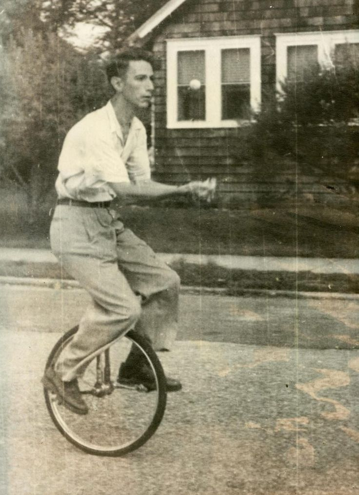
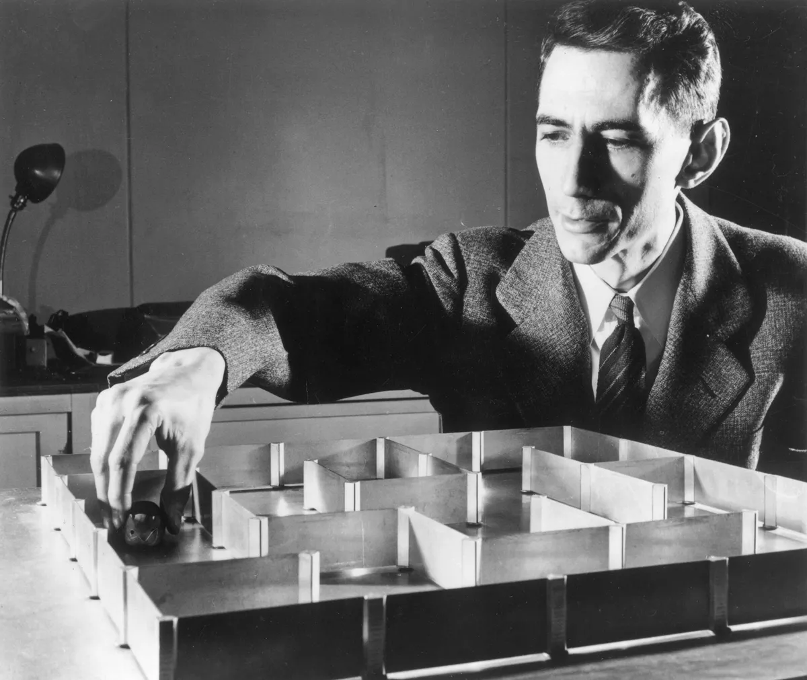

Интересные факты
Шеннон — жонглер и унициклист
Клод Шеннон любил жонглировать и кататься на уницикле прямо в своем офисе. Он часто использовал свои увлечения для демонстрации принципов работы механизмов и систем управления.
Создатель роботизированной мыши
Шеннон создал первую в мире роботизированную мышь по имени Theseus, которая могла находить выход из лабиринта. Это был ранний пример исследований в области искусственного интеллекта.
Шеннон и криптография
Во время Второй мировой войны Шеннон работал над криптографией для армии США, разрабатывая системы защиты информации и шифрования.
"В области криптографии успех не измеряется наличием секретов, а возможностью сделать секреты непостижимыми." — Клод Шеннон
| Год | Событие | Описание | Источник |
|---|---|---|---|
| 1916 | Рождение | Клод Шеннон родился в Петоски, штат Мичиган. | Биография |
| 1937 | Магистерская диссертация | Шеннон написал свою знаменитую диссертацию. | Биография |
| 1948 | Теория информации | Шеннон опубликовал свою работу по теории информации. | Биография |
| 1972 | Премия Шеннона | Шеннон стал первым лауреатом премии IEEE. | Биография |
| 2001 | Смерть | Шеннон умер в Медфорде, штат Массачусетс. | Биография |